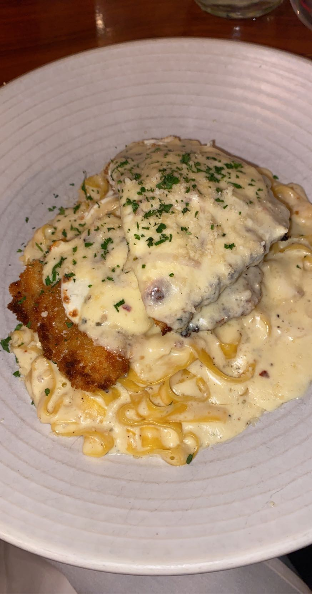

-Cento
Cento is one of my favorite Italian resturants in Madison. It is great for a casual dinner with friends or a quick date night. My personal favorite is the chicken parm with vodka sauce. They have amazing different pasta dishes and pizzas. Check out their menu for all the details!
What to Get: My Reccomendations
- Pasta:
- -- Tagliatelle: ragu alla bolognese, ricotta, parmesan
- -- Rigatoni Alla Carbonara: poached egg, pancetta, cracked black pepper, parmesan
- Pizza:
- -- Spicy Salumi: soppresata, mozzarella, basil, tomato sauce
- -- Margherita: basil, roasted cherry tomato, mozzarella, tomato sauce